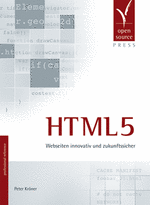

Im Verlag Open Source Press ist im Mai 2010 das Buch »HTML5 –Webseiten innovativ und zukunftssicher« erschienen. Der Verlag hat mir freundlicherweise ein für mich kostenfreies Rezensionsexemplar zur Verfügung gestellt.
 Das Buch kostet regulär 34,90 Euro und umfasst stolze 398 Seiten. Davon entfallen 314 auf den Hauptteil, danach folgt ein 60-seitiger Referenzteil. Die restlichen Seiten entfallen auf Inhaltsverzeichnis und Stichwortindex. Der Autor Peter Kröner ist selbstständiger Webdesigner und hat bisher durch sein Weblog auf sich aufmerksam gemacht, in dem er immer wieder fundierte Texte zur Frontend-Entwicklung veröffentlichte. Zudem gibt er deutschlandweit Schulungen zum Thema HTML5.
Worum geht es in dem Buch? HTML5 ist hier der Überbegriff für verschiedene neue Techniken für dynamische Webanwendungen, die größtenteils, aber nicht alle in der zentralen HTML5-Spezifikation beschrieben werden: Neue Textauszeichnungsmöglichkeiten, Strukturelemente, Formularfeld-Typen sowie direkte Multimedia-Einbettung. Doch hauptsächlich, das sollten potenzielle LeserInnen beachten, ist es ein JavaScript-Buch. Der Schwerpunkt liegt auf der Vorstellung von JavaScript-Schnittstellen (APIs): Formularvalidierung, Geolocation, das Scripting der Multimedia-Elemente, Drag & Drop sowie Canvas. Diese JavaScript-Fokussierung liegt mir, sie mag andere jedoch abschrecken. Wer bloß die Beschreibung des neuen HTML5-Markups sucht, der wird hier fündig, doch dieser Teil macht nur einen Drittel des Buches aus.
Neben dem möglichst browserübergreifenden Praxiseinsatz von HTML5 widmet sich ein großer Teil der Erklärung der Hintergründe: Wie entstand HTML5 historisch, wer spezifiziert HTML5, wo finden sich die Spezifikationen, wie arbeitet man direkt mit ihnen. – Auch auf diesem Blog habe ich HTML5 von dieser Seite zu beleuchten versucht, deswegen habe ich diese Passagen mit besonderem Interesse gelesen. – Kröners Haltung zu HTML5 ist skeptisch, er bewertet die Neuerungen mit Blick auf Einfachheit und Anwendbarkeit für Webautoren und kommt dabei teilweise auch zu vernichtenden Urteilen. Er lässt KritikerInnen zu Wort kommen und fragt, ob HTML5 je ein konventioneller W3C-Webstandard wird, was nach HTML5 kommt und wie andere, bessere Entwicklungsverfahren für Webstandards aussehen könnten. Diese Fragen gehen in der praxisorientierten HTML5-Berichterstattung oft unter, daher halte ich diese Passagen für eine wichtige Unterfütterung.
Dieses Buch ist anders als das Meiste, was man zum gehypten Thema HTML5 derzeit im Web liest. Es ist angenehm unaufgeregt und versucht »HTML5« nicht in schnell konsumierbaren Kurzartikeln zu verkaufen, wie es manche Online-Magazine tun. Dieses Buch ist insofern unspektakulär, es verlangt dem Leser und der Leserin ein entsprechendes Interesse an der genauen Funktionsweise und den verschiedenen Möglichkeiten ab. Es geht ins Detail und versucht die behandelten Themen gedanklich zu durchdringen. Der Autor hat sich intensiv mit der entstehenden HTML5-Spezifikation auseinandergesetzt und referiert diese mit großer Einsicht. In keiner Online-Quelle habe ich bisher den Versuch gefunden, komplexe APIs von Grund auf zu rekonstruieren und verständlich zu machen. Beispielhaft seien der HTML5-Outline-Algorithmus sowie die Drag-and-Drop-API genannt. Es kommt selten vor, dass sich in Fachbüchern aus dem HTML/CSS/JavaScript-Bereich Beschreibungen finden, die weit über die gängigen (kostenlosen, aber oft englischsprachigen) Online-Quellen hinausgehen. Ich verfolge HTML5 seit langem, sodass mir die meisten Sachverhalte des Buches zumindest grob bekannt waren, aber dieses Buch hat mein Verständnis in gewissen Punkten entscheidend erweitert.
Die Inhalte sind akribisch recherchiert und werden anschaulich dargeboten. Inhaltliche Schnitzer finden sich nicht, soweit ich das mit meinem Wissen beurteilen kann. Der Text ist sehr gut redigiert, mir sind nur wenige sprachliche oder Beispielcode-Fehler aufgefallen – es handelt sich noch um die erste Auflage, daher ist dies zu vernachlässigen. Die Codebeispiele sind tadellos und folgen einem guten Stil. Sie beschränken sich auf die jeweiligen JavaScript-Schnittstellen und setzen darüber hinaus keine fortgeschrittene JavaScript-Kenntnisse voraus. Das sinnvolle Einbetten des Codes in ein umfangreicheres, gut strukturiertes Programm muss daher der Leser, die Leserin selbst vornehmen. Kröner verwendet lediglich elementare Cross-Browser-Helferfunktionen wie addEvent(), setzt aber keine spezifischen JavaScript-Bibliotheken voraus.
Ein Negativpunkt ist das eintönige Layout sowie die abwechslungslose typographische Gestaltung. Das Buch verwendet keine Unterstrukturen wie »Tipp«, »Hinweis«, »Beispiel« mit entsprechenden Icons oder Randbemerkungen in mehreren Spalten. Diese Elemente tragen bei Büchen von Verlagen wie Addison-Wesley oder Galileo Computing zur visuellen Übersichtlichkeit bei. Der Verzicht auf solche Hypertextualität ist für mich kein Manko an sich. Es zeigt lediglich, dass es sich um einen klassischen Text handelt, der – zumindest kapitelweise – linear und zusammenhängend gelesen werden sollte. Das ist völlig in Ordnung, denn der Text lässt sich flüssig lesen, der Schreibstil ist angenehm und die Beispiele laden zum Ausprobieren ein. Kröner gelingt es, komplexe Sachverhalte Schritt für Schritt zu erklären. Wer es kurz und knapp will, ist auf die ausführliche Referenz im Anhang verwiesen. Selbst wenn das Layout den Charme von in LaTeX gesetzten wissenschaftlichen Arbeiten verbreitet, so ist es dennoch übersichtlich. Derweil ist die inhaltliche Struktur klar und verständlich. Leider ist das Buch komplett in Schwarz-weiß gedruckt – es ist mit Screenshots bebildert, von denen viele im Farbdruck verständlicher gewesen wären.
Von den vielen umfangreichen, nur wenig zusammenhängenden HTML5-Techniken und -Schnittstellen (siehe Übersicht über HTML5-Spezifikationen und -Literatur) kann dieses Buch natürlich nicht alle abdecken. Es bietet jedoch eine profunde Einführung in die wichtigsten größtenteils schon heute verwendbare Teiltechniken. Aufgrund der Detailtreue und der mitunter verzwickten JavaScript-APIs, die auf niedriger Ebene beschrieben werden, halte ich das Buch lediglich für Fortgeschrittene und Profis geeignet. Das soll aber HTML5-EinsteigerInnen nicht davon abhalten, zumindest kursorisch in dieses Buch hineinzuschauen und dabei manche API-Erklärungen zu überspringen.
Auf dem englischsprachigen Markt sind jüngst mehrere Bücher von namhaften Autoren erschienen: HTML5 For Web Designers von Jeremy Keith, HTML5: Up and Running von Mark Pilgrim sowie Introducing HTML5 von Bruce Lawson und Remy Sharp. Sicherlich werden in den kommenden Monaten und Jahren weitere und möglicherweise bessere deutschsprachige Bücher den HTML5-Hype befeuern. Bis dato bietet Peter Kröners Buch eine ambitionierte Einführung.
Die obige Rezension bezieht sich auf die erste Auflage. Mittlerweile ist die zweite erschienen, sodass der folgende Abschnitt aktualisiert wurde.
Andere Meinungen: